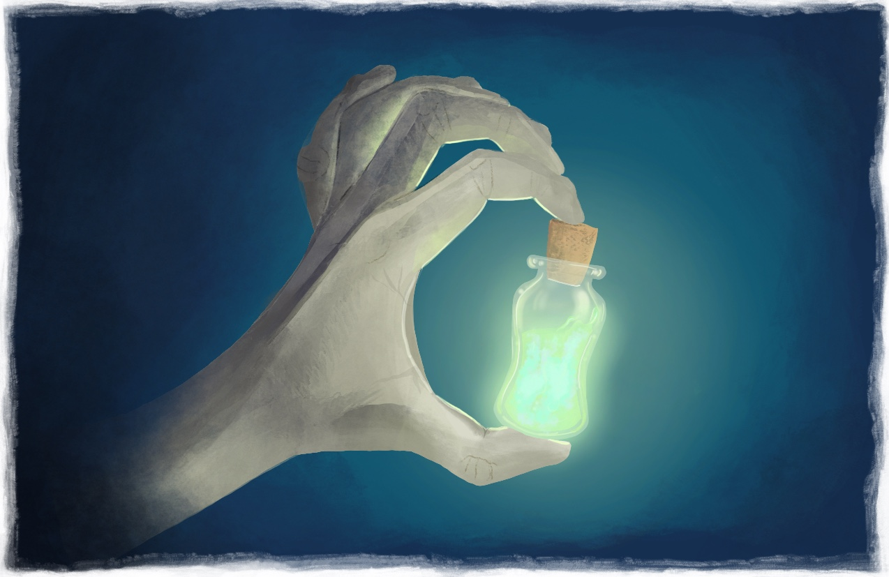
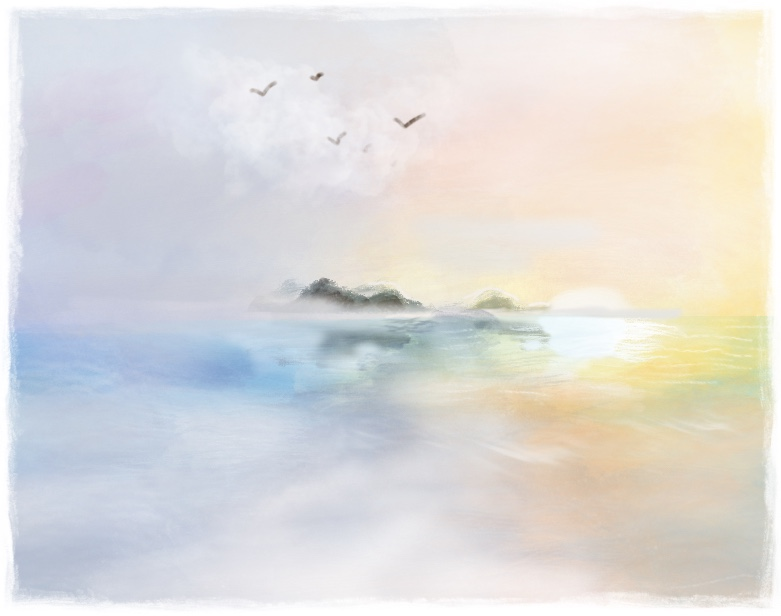
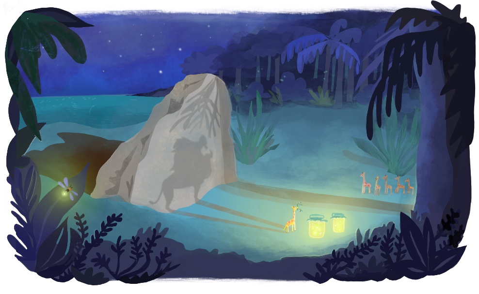
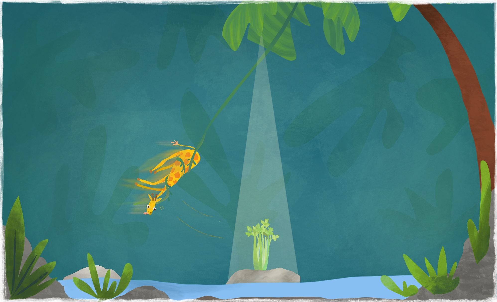

Teacup giraffes were first discovered by the Swedish naturalist and priest Olof Torén, an apostle of Carl Linnaeus, during his travels on the Swedish East India Company ship Hoppet. Departing from the port of Gothenburg, Hoppet set sail on the 26th of January 1748, an extraordinarily gloomy day when sea and sky was a single ashen entity and winds from the northwest brought a snow-mixed horizontal rain. The mood onboard the ship was cheerful nonetheless, as the crew dreamt of the transparent waters of southern seas, filled with colorful beings and stories to bring back home.
One suffocating evening in July 1748, shortly after Hoppet had rounded the Cape of Good Hope and sailed east of Madagascar, captain Erik Moreen was attacked by a headache so vicious it made him seasick for the first time since the beginning of his nautical career. Desperate to ease the pain he called on the ship surgeon, a crooked man who spent most of his time investigating fungi in the deepest corners of the ship’s bilge where the air tasted like year old bread.
 The surgeon brought a small bottle containing a beverage brewed of equal parts fermented goat milk and a distillate of mushrooms which, when dissolved, produced such a colorful luminance that the use of protective goggles was necessary to prevent achromatopsia. Ignoring the surgeon’s recommendation to limit the dose to a few drops of the brew, the captain emptied the bottle in one gulp and for a few moments lost all senses while the hair on the back of his head spun into permanent curls.
Although the pain subsided within less than thirty minutes, this was just the beginning of a nightmarish intoxication. The captain heard sirens sing lost lullabies from all directions, saw the kraken swallow the moon and spit it out as thousands of stars, and was convinced that all of his crew had turned into sharp-stemmed ferns, stationary and threatening to amputate him with every wavering step he took across the deck. During this confusion the captain tied himself to the fore-mast, prepared to fall head first into the flaming depths of the underworld. He was standing there as the sun rose, as his inebriation started to fade into melancholy, and saw two small islands appear on the horizon.
The ocean then formed a frothy path in front of Erik Moreen, from the bow to the two islands. In the captain’s still quivering mind time seemed to move backwards, and he tried to find solace from the rootlessness of this experience by searching his mind for pleasant memories. The path suddenly seemed indistinguishable from the road connecting the port of Gothenburg to his home in Guldheden, many nautical miles away. He even swore he could see a colony of black-backed gulls circling in the sky above him, establishing his notion that Hoppet somehow had made it back to the north. Confident he would soon be reunited with his wife, the captain gave orders to sail in the direction of the islands and would not listen to any objections until the ship was stranded on a sandbank no more than a stone’s throw away from its destination. Although Erik Moreen recovered from the surgeon’s medicament after a few days, the crew’s trust in him was not as easily restored and he was temporarily relieved of his duties as captain.
During the days it took the crew to dig Hoppet out of the sand, naturalist and ship priest Olof Torén visited the islands a few times but was apparently not very impressed by this occurrence. In his journals from this time, only one sentence makes mention of this part of the voyage:
Northeast of Madagascar lie two small islands not worth visiting for any other reason than the fact that they are inhabited by small, quadrupedal mammals with relatively long necks.
In line with the often undemocratic nature of human experiences, Olof Torén would encounter teacup giraffes twice over the course of a few years, while it would take centuries after they were first discovered before anybody else did. The second time Olof Torén visited the two small islands where teacup giraffes still live today, it was during his second and last intercontinental journey at sea, this time on the Swedish East India Company ship Götha Leijon. In 1750 he found himself back in the cerulean waters northeast of Madagascar. Again, it was an event characterized by pain that would bring the naturalist and ship priest to the teacup giraffe islands, but pain of the soul rather than the body.
 In the evenings, Olof Torén and supercargo Anders Gotheen, a man who would not hesitate to let people know his personal values aligned perfectly with the new ideals of the intellectual revolution today known as the Enlightenment, enjoyed sitting down for a game of backgammon on the main deck. Or rather, Olof Torén enjoyed the game while Anders Gotheen, as he liked to say, enjoyed engaging in dialectic discourse while playing a game only slightly distracting since winning after all was mostly a question of luck. Olof Torén had noticed that conversations with Anders Gotheen often made him worried about things he had not previously contemplated and was therefore less amused by the dialectic aspect of their game nights.
In the evenings, Olof Torén and supercargo Anders Gotheen, a man who would not hesitate to let people know his personal values aligned perfectly with the new ideals of the intellectual revolution today known as the Enlightenment, enjoyed sitting down for a game of backgammon on the main deck. Or rather, Olof Torén enjoyed the game while Anders Gotheen, as he liked to say, enjoyed engaging in dialectic discourse while playing a game only slightly distracting since winning after all was mostly a question of luck. Olof Torén had noticed that conversations with Anders Gotheen often made him worried about things he had not previously contemplated and was therefore less amused by the dialectic aspect of their game nights.
This particular evening it seemed Anders Gotheen would definitely lose. He watched Olof Torén bear off three of his white checkers and as he collected the dice supercargo Gotheen turned to the naturalist.
– For the intellectually brave and honest, he said, no comfort can be found in the concept of infinity. Everything typical of human life, he continued, is characterized by the notion of a finite world, and therefore a free human mind can never truly be consoled by the appreciation of endlessness. He paused and drank some wine from a metal cup.
– This is also true for the afterlife, he then added.
 The reason why, as Olof Torén would explain it a few days later during a one-way conversation with a group of patiently listening teacup giraffes, what Anders Gotheen said that evening had so effectively shaken the foundation of his world view, was not because it directly challenged his faith. No, it was the fact that what Anders Gotheen had said instead questioned how much existential relief any belief could offer whatsoever that resulted in a detrimental blow to his conviction.
The reason why, as Olof Torén would explain it a few days later during a one-way conversation with a group of patiently listening teacup giraffes, what Anders Gotheen said that evening had so effectively shaken the foundation of his world view, was not because it directly challenged his faith. No, it was the fact that what Anders Gotheen had said instead questioned how much existential relief any belief could offer whatsoever that resulted in a detrimental blow to his conviction.
For what felt like a very long time, Olof Torén listened to Anders Gotheen in detail describe the philosophical abyss all perspectives on life after death inescapably lead to. He started to feel lightheaded and ended the game early so that he could climb up to the upper deck to get some fresh air. It was a clear night and the sky seemed filled with an infinite number of stars. His head was now spinning, he lost his balance, made a futile attempt to reach for the shrouds, but inevitably fell overboard.
Olof Torén treaded water all night, motivated by his new fear of death. When the sun rose he for a moment forgot about the thoughts that had been plaguing him during those long hours in the dark water, because the early morning light draped the world in a calming emerald luster. He could now see he had drifted to only a yards away from the sandbank where Hoppet had been stranded a few years earlier. The sunlight was filtered through the foliage of a thousand palm trees on the islands between him and the rising sun and this is what created the green morning experience. He swam to the island closest to him and passed out on the beach, exhausted both physically and mentally.
When Olof Torén woke up the sun was about to set. As he slowly opened his eyes he saw a group of teacup giraffes walking towards him on the beach, and briefly thought they had come to welcome him back to the islands. But the small giraffe caravan walked past him and continued towards a large flat stone projecting out of the sand not far from where he was lying. In the light of dusk, everything on the beach seemed to cast extraordinarily long shadows and from where Olof Torén was positioned the stone looked enormous. The shape made him think of runestones, rocks Vikings would raise and decorate with runic inscriptions, but the size more resembled the moai stone statues of Easter island. The teacup giraffes took turns standing in front of the stone observing a large silhouette appear on the granite surface ahead. They seemed infatuated by watching their shadow twin move as they moved, grasping for palm tree leaves non-shadow teacup giraffes would never reach, and making low pitched vocal sounds reminding Olof Torén of larger animals. It was as if these giraffes knew about their unusually small stature and used the evening light to pretend they were tall, like their full-size relatives on the African mainland.
This time around Olof Torén spent two days in the company of teacup giraffes and grew to appreciate their cheerful demeanor, social competence and general friendliness. When not playing with shadows, chasing fireflies or resting in the crisp air next to a waterfall, they foraged the jungle for celery which seemed to be their favorite food. Time passed quickly on the islands because the teacup giraffes had an almost endless repertoire of delightful behaviors and at times it even appeared they adapted their conduct to what Olof Torén showed appreciation for.

On the Swedish East India Company ship Götha Leijon, the consensus was that Olof Torén was unlikely to still be alive, but most of the crew were god fearing men and the idea of leaving a priest to drown without a convincing rescue attempt seemed like the type of thing the almighty would never forget. Some of the them had been present for the Erik Moreen debacle a few years earlier and remembered the location of the islands from this incident.
Olof Torén saw the ship approach the islands from far away. After two days on the teacup giraffe diet he was famished because the more celery he ate the hungrier he became. Longing for the salted meats that made up a large part of the meals onboard Swedish East India Company ships, he said goodbye to his new four-legged friends and waded out in the water to meet the rowboat launched to pick him up. As he climbed onboard he turned around to catch a last glimpse of the giraffes and saw them gather on the beach for another evening shadow play ritual.
Back on Götha Leijon, Olof Torén wrote down all the details of teacup giraffes’ lives he could remember. During a game of backgammon, he tried to describe their unusual physique and social behaviors, but was soon interrupted by Anders Gotheen who said
– The human mind works in mysterious ways when deprived of energy